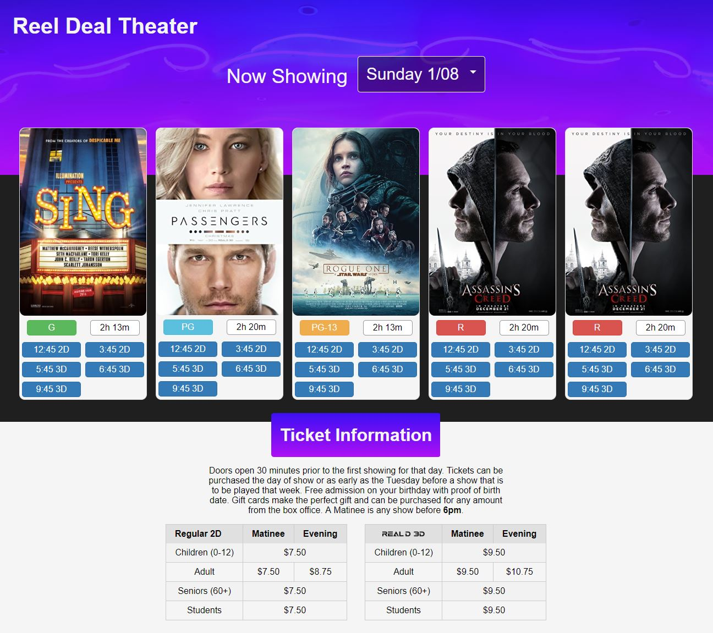

Projects by Landon Sutherland
Reel Deal Theater Redesign
Our local theater's website looks like it came out of 1993. My aim with this project is to bring new life to the site, bring it into the modern age of web design, and bring the information people want most right to the front where it is easy to find. Below is the current design of the new homepage. You can see the live development version here.
